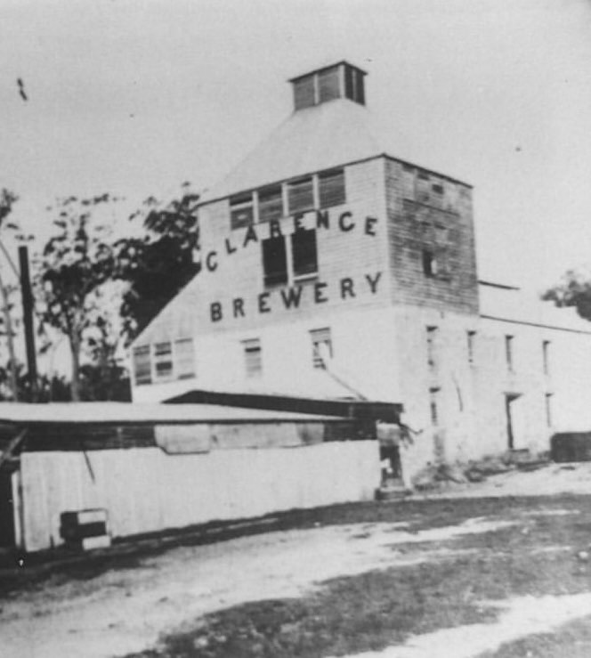
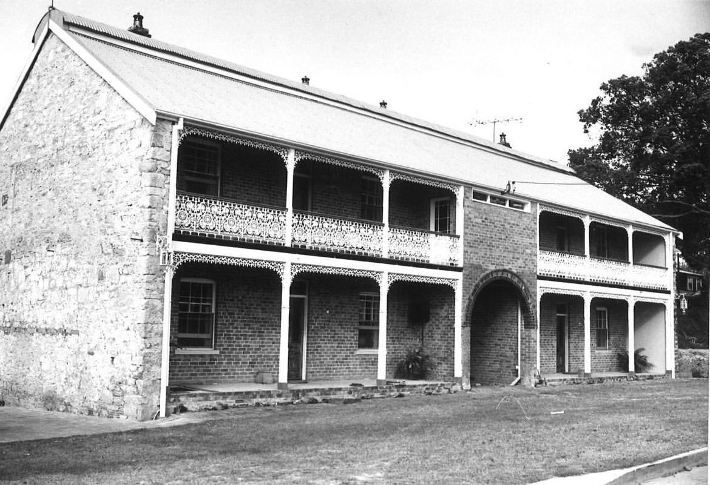
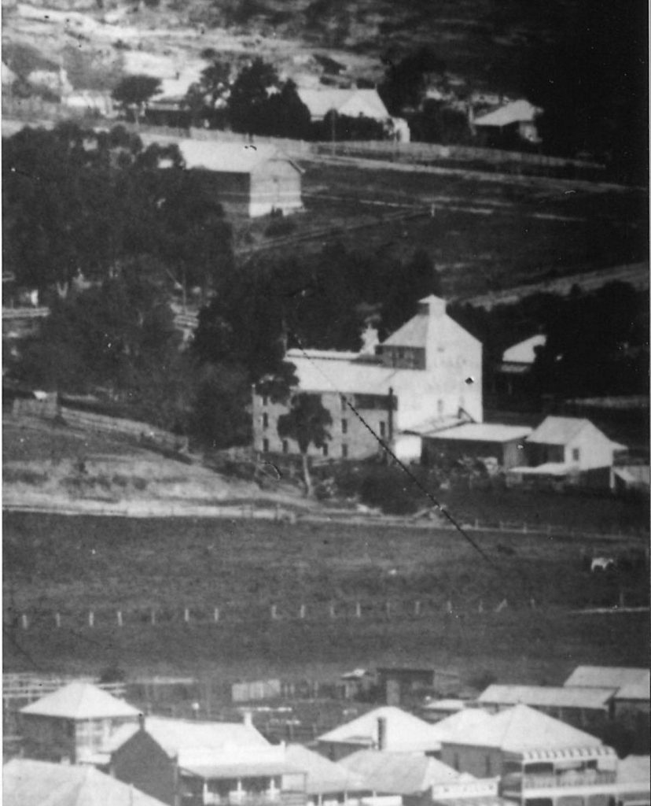
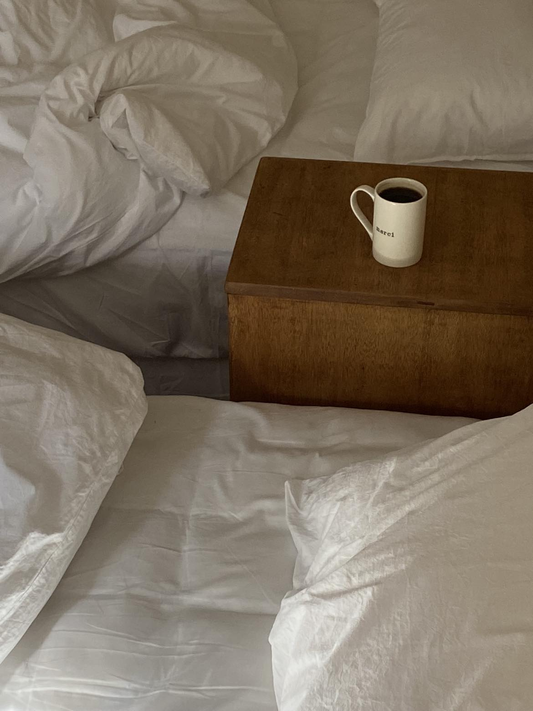

1881
Established on the Clarence
Established in 1881, The Clarence Brewery was a prosperous enterprise renowned for its production of local beers — most notably Bulldog Beer and Red Crab Stout. Located in Maclean at the heart of the Clarence River Valley, the brewery quickly earned a reputation for quality that extended well beyond the region.
Authorities in 1885 lauded the beer's quality, as it garnered significant demand from hotelkeepers in the Clarence and Richmond regions, with substantial quantities being shipped to Sydney. The arched entryway — still original today — once facilitated the transportation of barrels and casks to the rear stables via horse-drawn carts.

1902 — 1915
Closure, Transformation & New Life
Despite widespread acclaim, the Brewery confronted various obstacles over time — changes in ownership, difficulties sourcing ingredients, and the shifting tides of commerce. Surprisingly, its demise in 1902 resulted not from failure but from the cessation of brewing operations.
By 1915, the Brewery had undergone significant transformation, evolving into a dual residency with a central arched entryway. For a brief period, it even served as a boarding house — the building's strong bones and generous proportions making it naturally suited to housing multiple families beneath its lofty ceilings.

1970s
National Trust Recognition
In the late 1970s, a comprehensive restoration project entirely revitalised the building — earning it recognition from the National Trust of Australia due to its historical importance to the Clarence River region and the broader story of colonial-era industry in New South Wales.
The restoration preserved the most significant heritage characteristics: original timber floors, the ornate timber staircase, weathered stone and brick walls, expansive verandahs, lofty ceilings, stone fireplace surrounds, and the elegant cast-iron lacework that distinguishes the building's silhouette to this day.

2022 — Present
Custodians with Intent
Ceramic artist Romy Bennie and her partner Brad Smith have assumed responsibility as custodians of the Brewery since 2022. They wholeheartedly invite visitors to immerse themselves in the distinctive allure of the structure — to experience its remarkable original attributes not as a museum piece, but as a living, breathing place to stay.
The wine cellar with its convenient trap-door access, and eight cellars spanning the entire length of the building, remain as they always have — cool, quiet, and remarkable. Above them, the building holds guests with the same warmth it has offered for 143 years.
Plan Your Stay